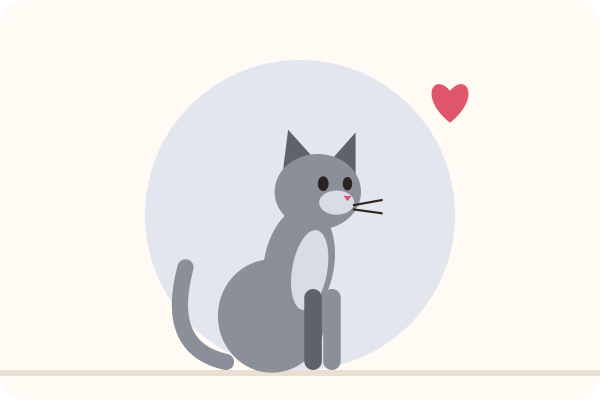

Quali giochi scegliere per un gatto d'appartamento?
Un gatto d'appartamento è un cacciatore senza territorio di caccia. Senza giochi adatti può annoiarsi, ingrassare, svegliare tutta la casa di notte o tendere agguati alle tue caviglie. I giochi giusti imitano una preda e gli permettono di appostarsi, inseguire e catturare. Ecco quali scegliere.
I criteri di scelta
- Imitare una preda: un gioco che si muove, si nasconde, scatta e si ferma, come un topo o un uccellino.
- La sicurezza: niente fili, nastri o pezzetti lasciati a disposizione quando non ci sei.
- Giocare con te e da solo: servono entrambi.
- La varietà: un gatto si stanca presto di un gioco sempre in giro.
I 6 tipi di gioco a confronto
| Tipo | Punti di forza | Limiti | Uso |
|---|---|---|---|
| Canna con piume | Il miglior gioco di caccia | Il filo è pericoloso se lasciato in giro | Con te, poi riposta |
| Palline e topolini leggeri | Gioco da solo, economici | Si perdono sotto i mobili | Da solo |
| Gioco di intelligenza | Cercare le crocchette, impegna la testa | Serve una breve fase di apprendimento | Da solo o con te |
| Tunnel | Nascondersi, appostarsi, balzare | Occupa spazio | Da solo o con te |
| Circuito con pallina | Gioco da solo che resta in un punto | Alcuni gatti si annoiano | Da solo |
| Gioco con erba gatta | Molto attraente per tanti gatti | Non tutti i gatti reagiscono | Da solo, ogni tanto |
1. La canna con piume: l'indispensabile
È il gioco che somiglia di più a una vera caccia. Muovila come una preda: si nasconde dietro un mobile, scatta a terra, si ferma, prende il volo. Lascia che il tuo gatto la catturi spesso, e chiudi la sessione con una cattura seguita da un piccolo pasto o un premio: la sequenza completa appostarsi, inseguire, catturare, mangiare lo calma.
Riponila dopo il gioco: il filo può essere pericoloso se masticato o ingoiato.
2. Palline e topolini leggeri
Palline in spugna, topolini di stoffa, palline con sonaglio: leggeri, schizzano via al minimo colpo di zampa. Lasciane in giro solo alcuni e riponi gli altri per tirarli fuori più tardi.
Abbastanza grandi da non essere ingoiati, leggeri per rotolare lontano.
3. Il gioco di intelligenza
Una tavola o una palla da cui il gatto deve pescare le crocchette con la zampa. Ricrea lo sforzo della caccia e rallenta i pasti. Inizia con una versione facile e mostraglielo la prima volta.
4. Il tunnel
I gatti adorano nascondersi per osservare, poi balzare. Un tunnel pieghevole crea un nascondiglio e un terreno di gioco, ancora più divertente con una canna con piume che passa davanti all'ingresso.
5. Il circuito con pallina e 6. l'erba gatta
Il circuito permette di giocare da solo senza che la pallina sparisca sotto il divano. I giochi con erba gatta (o valeriana) attirano molti gatti, ma non tutti: alcuni non reagiscono affatto. Proponili ogni tanto perché mantengano il loro effetto.
Quale gioco per il tuo gatto?
- Gattino: canna con piume e palline, in sessioni brevi. È il momento di insegnargli a giocare con i giochi e non con le mani.
- Gatto adulto attivo: più sessioni di canna al giorno, un tunnel e un gioco di intelligenza.
- Gatto goloso o in sovrappeso: il gioco di intelligenza, che lo fa lavorare per una parte della razione.
- Gatto anziano: giochi più tranquilli, a terra, con la canna mossa lentamente. Ama ancora cacciare, al suo ritmo.
- Gatto timido: inizia a giocare da lontano, con una canna lunga, perché osi avvicinarsi.
I giochi non sostituiscono gli altri bisogni di un gatto d'appartamento: tiragraffi, posti in alto per osservare, nascondigli e una finestra con vista arricchiscono molto le sue giornate.
Giocare bene con il tuo gatto
- Più sessioni brevi al giorno, soprattutto la sera, invece di una lunga.
- Fai ruotare i giochi: riponine una parte e tirali fuori più tardi.
- Mai le mani come gioco: il gatto imparerebbe ad attaccarle.
- Il puntatore laser da solo è frustrante perché non può mai catturare: se lo usi, finisci sempre con un vero gioco o un premio da afferrare.
- Prova il clicker: tanti gatti adorano imparare piccoli trucchi, vedi la nostra guida al clicker training.
Per saperne di più: il clicker training per principianti · quale tiragraffi scegliere? · il gatto che miagola di notte · la guida al gatto.
Leggi anche

Il gatto fa pipì fuori dalla lettiera: cause e soluzioni
Salute, cassetta, lettiera, stress o marcatura: capire perché il gatto fa pipì altrove, poi aiutarlo a tornare alla lettiera.
Quale lettiera scegliere per il gatto? Confronto e prezzi
Agglomerante, vegetale, silicio o minerale: vantaggi, limiti e come cambiare lettiera senza disturbare il gatto.
Il gatto miagola di notte: perché e come tornare a dormire
Fame, noia, età o calore: capire perché ti sveglia, poi adattare la sua giornata per notti serene.